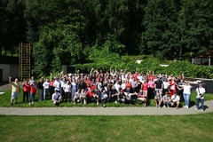
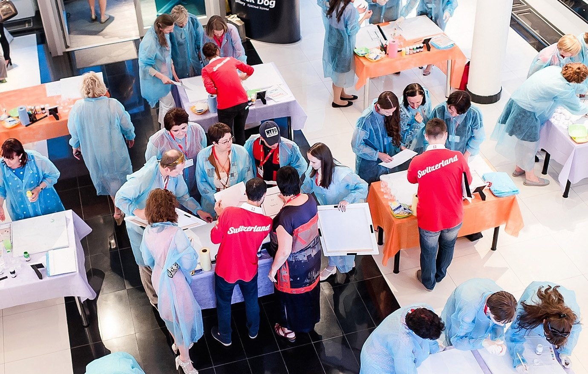
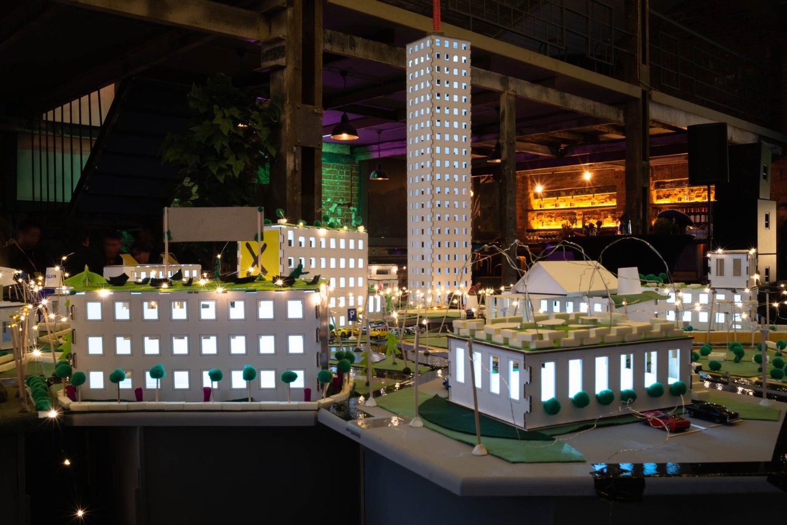
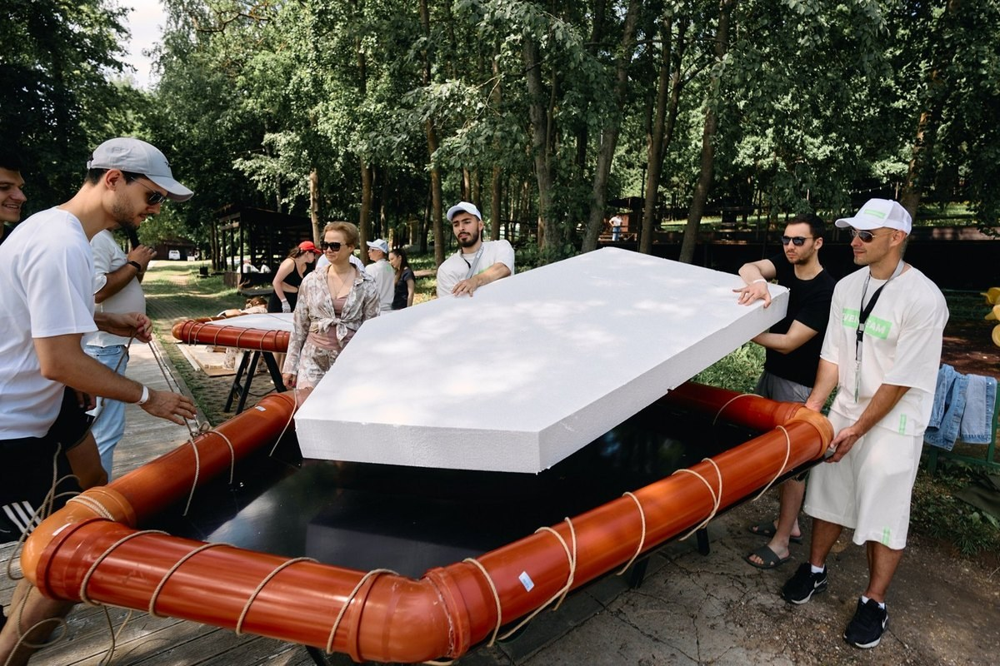

Материал для публикации на vsetreningi.ru. Word-файл: katalist-timbilding-dlya-hr.docx. Изображения лежат в этой же папке: anons-240x160.jpg, foto-1.jpg, foto-2.jpg, foto-3.jpg.
Как HR заказать командный день так, чтобы команда вернулась в офис с договорённостями, а не только с фотографиями.

Тимбилдинг, после которого ничего не меняется, обычно проваливается до игры: у него не было задачи. Команда хорошо провела день, через неделю все вернулись к прежним привычкам, а HR нечего показать руководителю.
Я Мария Варламова, генеральный директор ивент-агентства «Каталист». За 15 лет мы провели больше 5 000 проектов. Ниже четыре решения, которые HR принимает до игры и после неё, чтобы командный день работал как практика, а не как отдых. Мы не читаем лекций, поэтому формат у нас такой: тренинг на командообразование в игровом формате, то есть игра с разбором.
Запрос «сплотить коллектив» нельзя проверить. Запрос, с которым можно работать, называет симптом. С одним из шести HR приходит на бриф чаще всего:
Часто за жалобой «команда не дружит» стоят размытые роли или конфликт целей отделов. Поэтому на брифе мы спрашиваем про рабочие ситуации: кто с кем не договорился на прошлой неделе и из-за чего. Цель записываем одной фразой, которую можно проверить: «после игры продажи и производство согласуют сроки напрямую, без руководителей».
Лекцию о доверии слушают. В игре доверие приходится применять. Поэтому формат подбирают так, чтобы цель нельзя было выполнить в одиночку. Вот как мы сопоставляем симптомы и программы:

От HR на этом этапе нужен один документ: список участников с отделами. Составы команд мы проектируем так, чтобы перемешать «лагеря», а не дать людям сесть с привычными коллегами. Команды у нас по 8-12 человек, на каждую приходится свой помощник.
Как это выглядит на деле. Для «ВкусВилл» мы провели «Мегаполис» для 130 сотрудников из разных отделов. За 3 часа они построили город из 16 районов. Каждая команда делала свой район, а потом коллеги ходили друг к другу «в гости»: прокладывали общие дороги, договаривались о едином стиле, подгоняли высоту зданий и выбирали место для главной площади. Подробности и фото есть в кейсе «Мегаполиса» для «ВкусВилл». У этого проекта была задача познакомить людей и дать им общее дело, и замера, изменилась ли работа отделов после игры, у нас нет. Но механика та же, что нужна для цели «договариваться напрямую»: пока соседи не согласовали стык, город не складывается.

Игра даёт опыт, а выводы появляются на разборе. Без него остаётся эмоция. У нас разбор идёт 15-20 минут сразу после финала. Ведущий задаёт точные вопросы: какие роли сложились, где потеряли время, какое решение сработало. Выводы формулируют сами участники, потому что люди сильнее держатся за решения, которые придумали сами. На выходе две-три конкретные договорённости. Например, правило прямой обратной связи или разбор ролей на старте нового проекта.
Что спросить у агентства про ведущего:

Эмоции финала остывают за несколько дней, поэтому закрепление начинается в день игры.
Учебный курс по переговорам или менеджменту с тренером и сертификатом делают тренинговые центры. Мы такой продукт не продаём и говорим об этом на брифе. Глубокую HR-диагностику с опросами и ассессментом мы тоже не проводим. Сопровождение команды после проекта и обучение навыкам остаются за тренинговыми центрами, а мы даём основу для рабочих ритуалов: прожитый опыт и выводы команды.
Если вы тренер или руководитель обучения, используйте игру как площадку для отработки. Заранее договоритесь с агентством, какое поведение из вашей программы команда должна применить в игре, и попросите включить его в вопросы разбора.
Хитрость на десерт: попросите ведущего в конце разбора назвать вслух по одной договорённости на каждый отдел. Когда её произнесли при всех, к ней проще вернуться на ближайшей планёрке.
Мария Варламова, генеральный директор ивент-агентства «Каталист»